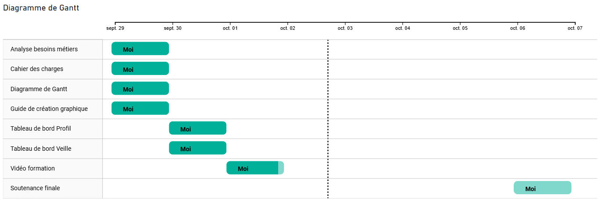
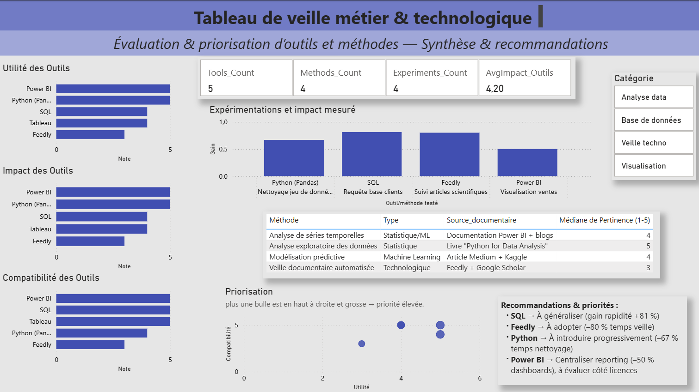
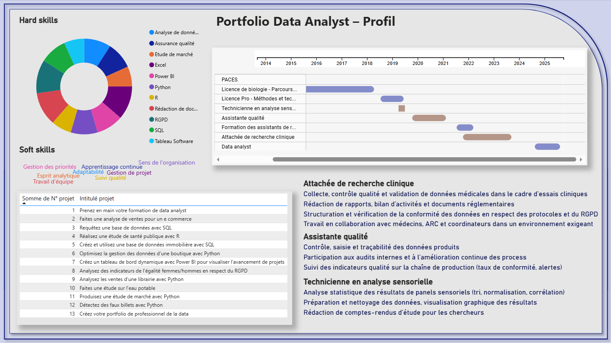

# Marie HENAULT
**Data Analyst — formation complétée (OpenClassrooms)**
Ancienne attachée de recherche clinique (AP-HP) et assistante qualité, je transforme des données brutes en insights exploitables : SQL, Python, Power BI, Tableau, Excel.
---
## Diagramme de Gantt

Capture d'écran : tableau de bord - diagramme de Gantt (screenshot).
---
## Dashboards
### 1) Veille technologique

Capture d'écran : tableau de bord - veille technologique (screenshot).
### 2) Profil professionnel (tableau de bord)

Capture d'écran : tableau de bord - présentation du profil.
---
## Livrables (PDF)
- [Analyse des besoins métiers](analyse_des_besoins.pdf){:target="_blank"}
- [Cahier des charges](cahier_des_charges.pdf){:target="_blank"}
- [Procédure de documentation](procedure_documentation.pdf){:target="_blank"}
---
## Vidéo de formation
---